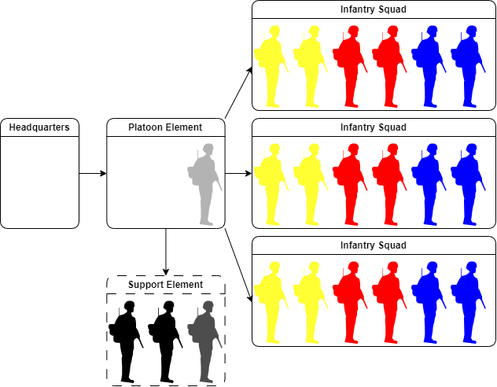

Task Force Omega player's handbook and basics¶
This is a document designed to accompany the Task Force Omega Mission Series.
In it, you will find a quick reference for some of the most basic information you will need in order to function effectively on the TFO Server.
SOP (Standard Operating Procedures) and command structure¶
Although SOP is covered during your Basic Combat Training, a refresher is always welcome.
In order to understand how TFO functions during missions, one must understand it's command structure.
We are going to start from the top and work our way down.
ROE¶
This is as much a mindset as it is a rule of engagement.
In other words, if the ROE is red, you should be doing everything in your power to remain covert and unseen.
| ROE / Weapons Green | Free to fire on enemy sighted |
| ROE / Weapons Orange | Return fire on contact only |
| ROE / Weapons Red | Hold fire (unless death is unquestionably imminent) |
Ranks¶
TFO members all have military ranks, based on the U.S. Army.
These ranks serve only as designations for the combat skills, and a little bit of commitment and attendance.
Since we don't have a static unit roster, it's very much possible that someone with a lower rank is still in command. Only in the absence or downed leaders, the member of the highest rank comes in command. When a rank is referenced in this guide, we are talking about rank within the Chain of command, and not the TFO rank.
Current roster is available here, and a summary of the ranks is available here
Standardized squad roster in operations¶
| HQ | XRAY |
| Radio: CH1 (152) | Radio: CH1 (343) / (152) |
 Zeus Zeus |
 PLT leader PLT leader |
 PLT medic PLT medic |
|
 JTAC/FO JTAC/FO |
Please do keep in mind that squad composition can change, depending on the mission.
| ALPHA | BRAVO | CHARLIE |
| Radio: CH2 (343) | Radio: CH3 (343) | Radio: CH4 (343) |
| Squadleader* |
Squadleader* |
Squadleader* |
| Combat Life Saver |
Combat Life Saver |
Combat Life Saver |
| Rifleman (Light AT) |
Rifleman (Light AT) |
Rifleman (Light AT) |
 Grenadier Grenadier |
Rifleman |
Grenadier |
| Marksman |
 Engineer/EOD Engineer/EOD |
 Anti air Anti air |
 Auto rifleman Auto rifleman |
 Anti tank Anti tank |
Auto rifleman |
| *Squadleaders are required to have a long range radio (152), tuned to CH1 | ||
| Each squad has a 3-men reserve system, in case a slot is already taken | ||
Mission-maker¶
This is usually one or two persons who prepared and created the mission, and are ultimate responsible for a good experience/performance of the mission.
Briefing¶
All missions start with a briefing done by the mission-maker for either the Platoon and/or Squad-leaders or for everyone.
During such briefings, the mission-maker is expected to give information about the objective(s), assign assets, and give other mission critical information. (insert hyperlink to briefing information).
After the briefing, platoon and squad leaders have an opportunity to ask any questions (unless stated otherwise).

HQ (Mission maker)¶
After briefing, the mission maker remains on base and will act as the highest level of the chain of command.
HQ assigns objectives, provides (non human) support elements, handles all technical issues and also directs the enemy AI if necessary.
Platoon element¶
The platoon element consists of the platoon leader (PLT), the platoon medic and optional an Joint terminal attack controller (JTAC) or Forward Observer (FO) when the mission requires it.
Although this element is present on the field, it does not see much combat. It's main purpose is to coordinate all Squads under it's command.
With the platoon medic present in this element, it usually moves behind the battlefield to treat wounded. Usually there is only 1 platoon element, but as the unit grows, it is expected to have more than one.
Platoon leader¶
The platoon leader answers directly to HQ, and acts as the highest ranking officer on the field. He coordinates squads and is responsible of forming a battleplan or adapt it during the mission.
Platoon medic¶
The Platoon medic (or just "medic" for short), is the highest ranking medical personnel in the operation. He is more capable and effective medically than it's combat life saver (CLS) counterpart and coordinates treatment of casualties with them.
With it's position in the platoon element, it can directly coordinate with the platoon leader.
JTAC/FO¶
Joint Terminal Attack Controller, or Forward Observer
To prevent any high explosive ordinance from landing in the wrong place, all air or fire support teams require a JTAC/FO. The JTAC/FO is responsible for relaying and converting platoon leader's orders like "blow up that house" to something precise and effective to the support team.
Most of the time, the JTAC/FO is allowed to suggest targets or call in ordinance at their own discretion, as long as the PLT is timely advised.
Infantry squads¶
A squad is the primary asset of a platoon leader. These teams are capable of effectively deal with objectives on their own. A full team consists of 6 soldiers, all with their own role.
Not all squads are setup with the same roles and can also be changed depending on attendance and mission requirements.
All teams are made up from at least: 1 squad leader, 1 combat lifesaver (CLS) and one rifleman variant.
The rest of the team is filled up with specialized roles like Heavy Anti-tank or automatic rifleman.
Buddy system¶
To organize a squad, we utilize a system called the "Buddy System". This systems divides the squad up in 3 teams of 2 soldiers. These teams/buddies look out for each other during combat and keep each other alive.
If your buddy would go down, you would and should be the first to realize this, and call it out immediately to the CLS of your team.
Support teams¶
All available support teams ultimately fall under a platoon leader's command, however support teams are allowed to make decisions at their own discretion like relocating or engaging high priority targets. It is also possible for HQ to call the support team away for different tasking.
General attitude and approach¶
You are part of a bigger picture and a member of a team. In Task Force Omega, we encourage people to keep teamplay in mind.
Every squad will be tasked with something, and it isn’t your job to second guess your squad leader or to carry out tasks given to other squads.
You will not have the bigger picture if you do not have access to command net. So, do not take it upon yourself to implement your own ideas without the say so of the squad leader.
You need to think and prepare before you act.
Basic DO's and DON'Ts¶
It really is an abridged version of Task Force Omega rules, available here.
DO¶
- Respect fellow players, no matter the circumstance
- Stay close to your group, unless told otherwise
- If you have an issue, speak to an admin, don't try to solve it yourself
- Carry out the orders given to you by your squad leaders
- Focus, think, and prepare before you act
DON'T¶
- Initiate contact without the say so of the squad leader (apply ROE)
- Scavenge bodies for equipment unless asked to do so
- Take enemy weapons without permission
- Spam markers on the map
- Respond to a teamkill, by teamkilling
Glossary¶
| Abbreviation | Meaning |
|---|---|
| RV | Rendez Vous point |
| RP | Rally Point |
| ORP | Objective Rally Point |
| OP | Observation Post |
| LZ | Landing Zone |
| DZ | Drop Zone |
| TRP | Target Reference Point |
| LOA | Limit Of Advance |
| CAS | Close Air Support |
| PID | Positive IDentification |
| HQ | Head Quarters |
| CO | Commanding Officer |
| 2IC | 2nd In Command |
| SQL | SQuad Leader |
| TL | Team Leader |
| MRAP | Mine Resistant, Ambush Protected |
| AFV | Armoured Fighting Vehicle |
| APC | Armoured Personnel Carrier |
| IFV | Infantry Fighting Vehicle |
| MBT | Main Battle Tank |
| SPAAG | Self Propelled Anti-Aircraft Gun |
| Mechanized | Tracked |
| Motorized | Wheeled |
| ORBAT | ORder of BATtle |
Advanced Combat Radio Environment 2 (ACRE2) Usage¶
In order to achieve the best tactical experience in Arma3, Task Force Omega uses ACRE2 as the main radio communication tool during the events.
As it is installed by Steam, the add-on will be added to TeamSpeak plugins library automatically.
(all below is WIP)
Brevity and clean communications¶
Once the conversation has been initiated, keep your message simple and short. Think of what you’re going to say before you begin to transmit over the radios, do not “umm” and “uhh” over the radio. Keep it brief, no more than 10-15 seconds maximum.
If you lose your train of thoughts while speaking over radio, simply state “Wait one” and take a moment to collect your thoughts before re-initiating the conversation. Also stay out of the coms if there are no important things, use direct chat.
Remember, keep it brief and clear, keep it brief and clear, and keep it brief and clear.
Acknowledging speakers¶
Make sure you always acknowledge the person who is speaking to you, even if what they are telling you does not require you to give a response.
After someone speaks to you over the radio simply state something such as “Roger” to let them know that you have heard what they had to say and understand it.
Should you fail to hear what someone said or did not quite understand what they were saying do not be afraid to say something such as “You this is me, repeat last” at which point the previous speaker should restate their message to you.
Initiating and responding to calls¶
This is just about the most important piece of radio etiquette, initiating a call with another unit properly.
To do this is very simple; simply say “You this is me.”
If someone is calling you over the radio, but you do not have time to listen to whatever they need to say due to combat or some other pressing matters do not be afraid to respond with “You this is me, wait.”
Once you have the ability to listen to what they need to tell you though, do not forget to re-initiate the conversation with “You this is me” at which point they must now acknowledge you before you proceed to inquire about what they wanted to tell you.
Default keybinds¶
| Action | Keybind |
|---|---|
| Volume control | Tab |
| Default Radio key | Capslock |
| Radio Left Ear | Ctrl + Shift + Left Arrow |
| Radio Right Ear | Ctrl + Shift + Right Arrow |
| Radio Center | Ctrl + Shift + Up Arrow |
| Toggle Headset | Ctrl + Shift + Down Arrow |
| Cycle Radio | Ctrl + Alt + Shift |
| Open Radio | Ctrl + Alt + Capslock |
It is HIGHLY recommended that you change these to your liking by going to Settings > Controls > Configure Addons > ACRE2
Communications procedures¶
You may be called upon to use the command net or emergency net at some point.
When doing so you need to know the following communications protocols
- Generic radio message
- Contact report
- Enemy sighted report
- Situation report (SITREP)
Generic radio message¶
All radio messages between group leaders use a very simple communications protocol.
When broadcasting over radios, ALWAYS state your callsign then the recipient callsign ("Alpha to XRay")
When the recipient party acknowledged your transmission, you can broadcast your message, keeping it as concise as possible.
Command comms typically goes on in Command chat, which unless you are the group leader, you won’t hear.
If your squad leader goes down and you are next in line for command, it is your responsibility to contact command and let them know your current situation (keep in mind your yellow smokes too).
However you will not be able to do this on command net because you will not be the group leader
The easiest way to transmit this information is to tell your medic ground, who can relay the priority to command.
Do NOT be afraid of "breaking" comms when an emergency is going on.
Please do keep in mind to announce "BREAK, BREAK, EMERGENCY" before broadcasting the emergency on any radio channel.
Contact report¶
A contact report is given the moment you get into contact, it is done without delay on command net or emergency net, if you are temporarily in charge.
It takes priority over any other message and does not wait for the command net current comms to stop.
This then informs command that your squad has just entered into a firefight and may need assistance shortly, so he can start preparing a support plan for you.
It also aids in situational awareness, if you were to go down a moment later, and had not issued a contact report, he would not know you were having problems.
Once you have settled into the firefight, then you can give a more detailed report on your current situation.
Enemy sighted report¶
You would use an enemy sighted report to update command on enemies that you have seen but are not in contact with.
You would need to give detailed info and already have marked the enemy position on the map. (Do not spam markers, use text as much as possible, with time and directions if able)
Situation report (SITREP)¶
This is used to quickly get information on something specific. Let's say for example, the Mission commander wants to know how much AT each squad has or the general ammo situation in squads, to know if a resupply is needed.
This then requires the squad leader to get the information out of his squad.
Another SITREP used is the medical report. This ensure a way for the platoon medic to know exactly the conditions of the squads, and if an emergency is going on.
A platoon medic will ask all the combat life savers for a MEDREP (MEDical REPort), then the CLS will do a roll call on their squads.